Hi, I'm Saravana — a Product Designer with over 6 years of experience specializing in AI-driven user research and design.
I work on digital products for high-profile clients, leveraging AI's analytical and predictive capabilities to deliver innovative, user-centered solutions.
I do vibe coding with Claude AI and Figma Make to accelerate application design workflows and enhance prompt-driven design processes.
I Believe
I strongly believe that creative ideas are born in highly collaborative environments. Starting from interacting with users, collaborating with product owners, stakeholders, business analysts and team members are a key part in delivering delightful user experiences.
Work Experience
2021 — PresentSr. User Experience DesignerCognizant Technology Solutions
2021User Experience DesignerInnominds
2019 — 2021Jr. Product DesignerQikPod
2019InternQikPod
Tool Knowledge
Figma
Claude
Gemini
ChatGPT
Procreate
Miro
Webflow
Core Competencies
Product Ownership
UX Research
Vibe Coding
AI Systems
Prompt Engineering
Measure Impact
Usability Testing
Team Collaboration
Course Certifications
PRO UI/UX DesignerCompleted in 2019
Figma Design EssentialsCompleted in 2022
Solution StructuringCompleted in 2022
Adobe Firefly BasicsCompleted in 2023
ChatGPT for WorkCompleted in 2024
GitHub Copilot BasicsCompleted in 2024
Generative AI FundamentalsCompleted in 2024
AI + ChatGPTCompleted in 2024
Designs that shape complex systems
Six projects across Fintech, Automotive, Logistics, Fitness, and AI-assisted product design — each a story of research, collaboration, and the translation of intricate workflows into clear, user-centered design.
A web-based software update application that controls the sequence of software updates across many regions for different types of vehicle lines.
Role
Sr. UX Designer
Industry
Automotive
Platform
Web Application
Year
2024 – 2025
Requirement
From scattered spreadsheets to a structured platform
To provide a design solution that converts excel-created data into a web application with desired features that acts as a convenient platform for the users. Creating feasible design concepts that will be developed into the application phase by phase in a structured module approach.
Design Process
An iterative, collaboration-first flow
Collaboration
Planning & Documenting
Design & Iterations
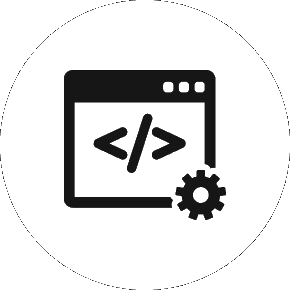
Development
Release
Re-iterations loop back from Design through to Release
Initial Days of Client Sessions
Aligning on the foundations
Wanted to gain the initial 4 months of discovery phase as there are 200+ screens and 500+ entitlements in the application. So we needed to study the application and identify complex workflows. We collaborated with product owners and the development team to make the most out of the discovery phase.
Purpose of the Application
Elaborately discussed over the core purpose of this application in terms of achievable goals and benchmarks.
Expectations on the Design Team
Our role was to design the web-based application with effective features reducing the users' efforts significantly.
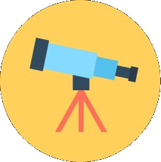
Scope of Work
Understood the coverage of work in terms of design, development and testing.
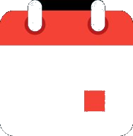
Planning & Structuring
Sprint planning for modules to start with in a structured manner and timelines set accordingly.
Gathering the required Artifacts
Gathered the excel artifacts that are manually created by the Ford team with real-time examples to correlate with the actual process.
The Existing Process
Manual creation of update sequences via excel listing
The client team was relying on manual creation of Update Sequences via excel listing using 4 different files and later feeding these files into the cloud system for the further process of update deployment.
Creating & Maintaining Excel Files
Users manually create 4 excel sheets — Vehicle Regions, Model Year, Variant & Update Sequences. They have to constantly maintain these listings with lakhs of data for pushing software updates.
Uploading files to Cloud Systems
The files are uploaded into cloud-integrated systems. Multiple systems with different packages meddle with the data. Validation & reconciliation happens while importing the files.
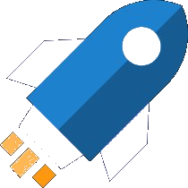
Data Processing between systems
Sequence validation, integration with condition packages, discovering the right VINs for updates, obtaining vehicle targets, and finally deploying to vehicles.
Summary Reporting after Deployment
Once deployment is done, the system creates a summary of reports indicating necessary information for users to create further sheets for upcoming priority updates and missed/failed updates.
Strategy & Brainstorming
Mapping action items before designing
We jotted down the key action items and our plan of course before starting with the design concepts. So we put together all the information we collected over the client sessions and the information that needed to be procured in future to go on with the design proposals.
Feature Planning
Translating spreadsheet workflows into web features
We worked onto evolve the excel usage experience into a web-based application which basically automates a lot of their hectic manual work. To have a basic idea where we can innovatively propose some features apart from what they're used to, we did a feature planning amongst our design team and then clarified with the development team for feasibility.
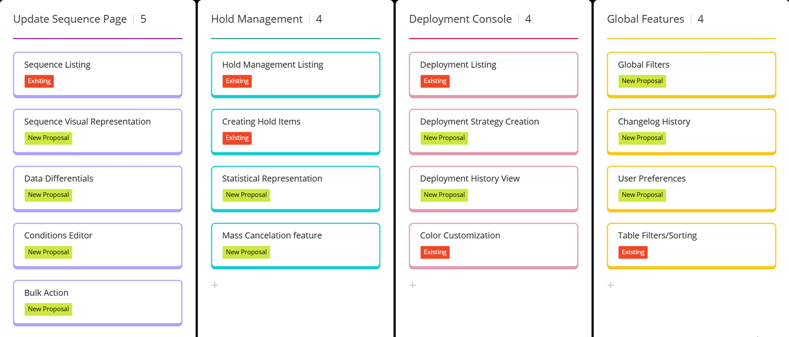
Information Architecture
Compiling modules into a structured IA
Compiling all the modules into an information architecture to provide more structure and consistency in achieving our goal. So we can clearly identify the modules and its functionality in a broader view.
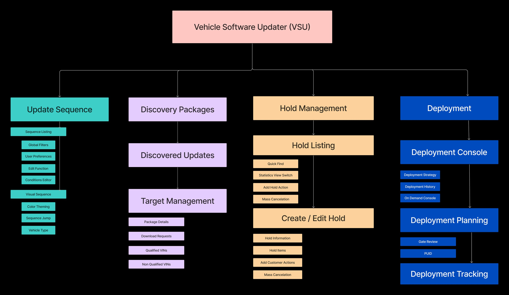
Core Design Solutions
The key innovations we proposed
Basically we wanted to provide them a better experience with new additional features which they never had in their manual excel mode to make their life easier. The below highlighted features were some of the key solutions we introduced based on our research.
Visual Sequence Representation
This was one of the well-received solutions from the client team. They were tired of going through the listing view apart from data edits — so this view was a core need to make decisions inside the application.
Each record can be viewed in a pictorial flow view where key users analyze the flow happenings and make critical decisions on software update sequences.
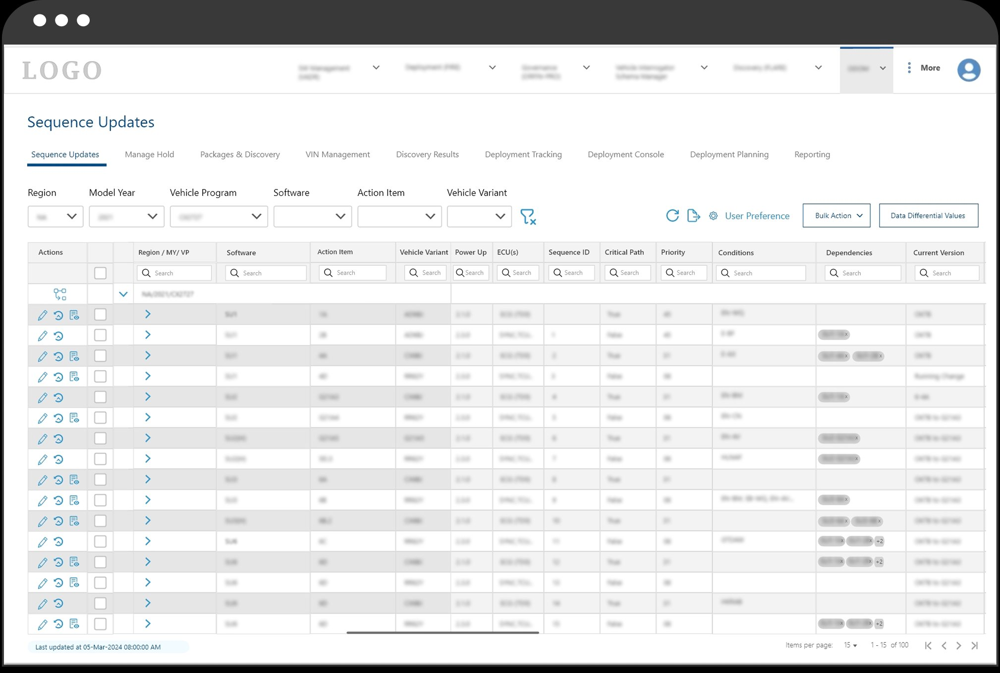
Indicates Sequence Number
Indicates Critical Path
Updates on Hold
Deployed Updates
Planned Update
Deployment In-progress
Data Differentials
The application doesn't just run on files uploaded one time. Frequently data is modified by the users and uploaded into the system which adds a new value, changes an existing one, or removes one.
To keep track, we built a dedicated view with a time-period filter and clear color coding: value changed, value removed, value added newly.
Conditions Editor
At some point the application needed complex conditions to be added to control the update sequences provided with certain criteria. So we had to create a Conditions Editor within the bulk editor functionality.
Oh yes — this one applies conditions to bulk items!
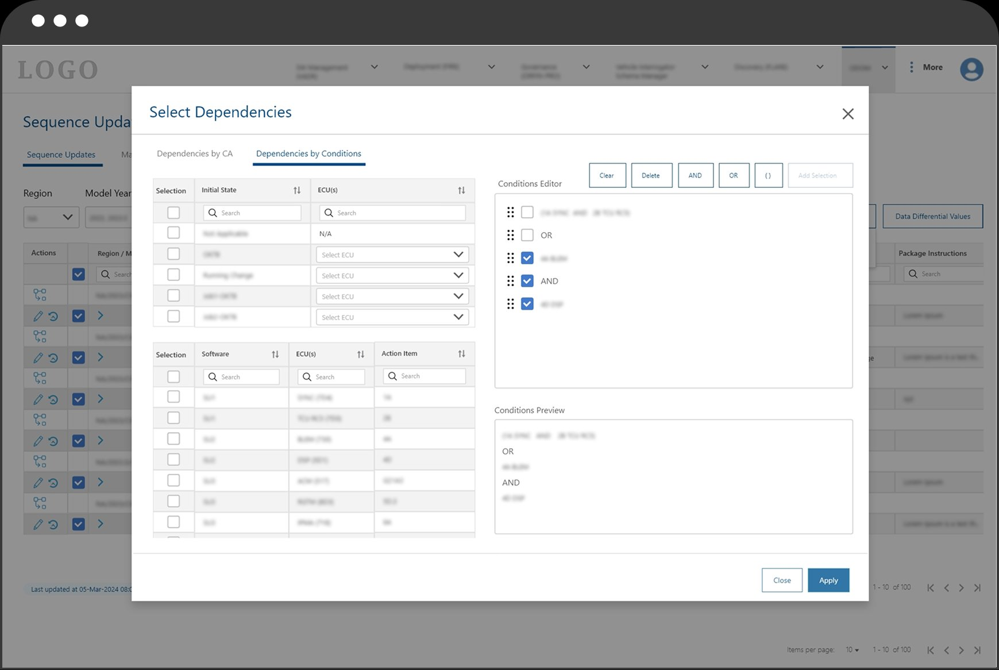
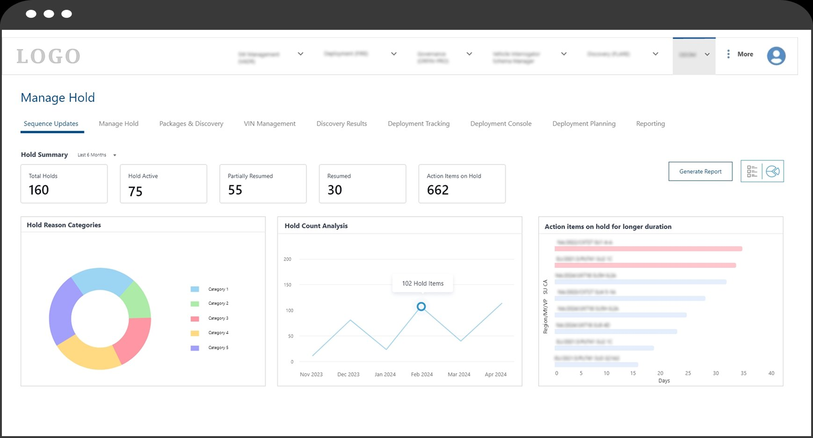
Statistical Representation for Holds
Charts and stats across many modules, but this one is a fine example where product owners make key decisions in holding or releasing an update to the end customer.
Creating Deployment Strategy
A dedicated UI to create and edit deployment strategy with various parameters that suit the business needs — controlling the number of updates to deploy per day and the interval frequency between deployments.
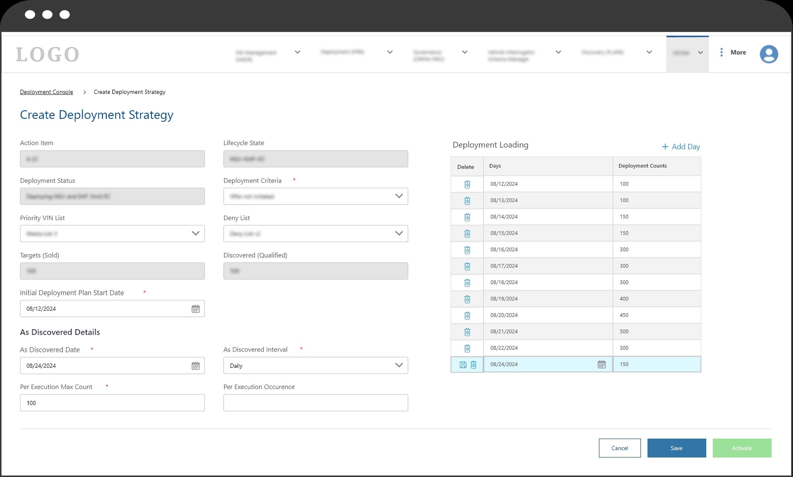
Hurdles Along the Journey
Adapting as the scope evolved
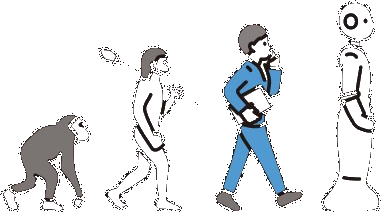
Evolving requirements
The base requirement kept evolving as we progressed. Since this was a project from scratch, new concepts came in that weren't discussed initially. Designing in a scalable format helped us accommodate these features later in the journey.
Shifting timelines
Initial planning was altered due to priority module developments and timeline constraints. We had to adapt accordingly and proceed in an unstructured way at times to give the desired solutions and meet the deadline.
An internal loan application that is used to process loans through various stages starting from Loan onboarding till closure. It has 7 broad modules with a wide set of user groups using the application at different stages.
Role
Sr. UX Designer
Industry
Fintech · Banking
Platform
Web Application
Year
2023 – 2024
Requirement
Refresh a legacy interface without breaking the system
To redesign the existing legacy application interface to enhance the user experience. Designs should adhere to their in-house design system and should not cause major API changes.
Agile UX Process
A workflow built for continuous testing & iteration
Planning & Discovery
Collaboration & Ideation
Design
Development
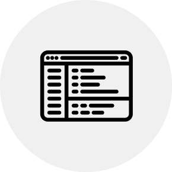
UAT Testing
Release
Internal testing & reiterations · Rework & reimplement loops at each stage
Initial Phase Planning
Mapping 200+ screens before drawing a single one
Needed to plan out the initial 4 months of discovery phase as there are 200+ screens and 500+ entitlements in the application. So we needed to study the application and identify complex screens and workflows. We then panned out feasible design concepts after collaborating with product owners and the development team — making the most of the discovery phase to deliver impactful design solutions.
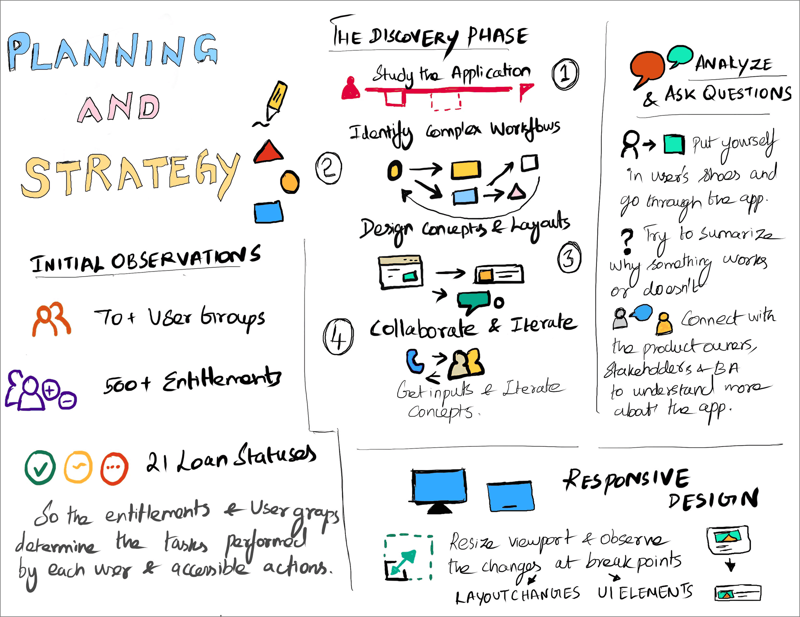
Understanding Loan Details
The core screen, structured
As a process of identifying complex workflows, we felt that the Loan Details section forms the core part of the application — where all the important tasks are carried out by different user groups. We created an IA structure segregating sections under Loan, Property and Client to get a better understanding before laying out designs.
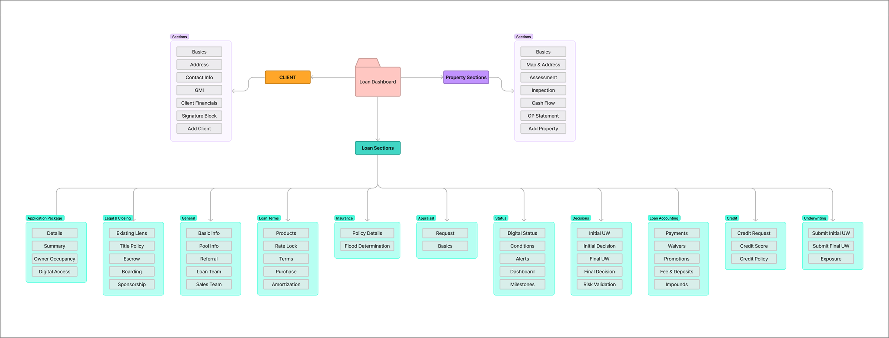
Major Observations
Pain points spotted in heuristics
With some initial heuristics we identified explicit pain points that could be seen in the Loan Details screen. Our key focus was to make this screen more user-friendly.
Congested layout & navigation. The existing layout was pretty congested. Users might easily get lost or find it hard to locate the section they're looking for.
Errors push content below. Scenarios with lots of errors/info depiction on screens actually pushed the main content below, increasing the vertical scroll of the page.
Vertical-only form layouts. Form elements are entirely placed in a vertical manner while there is more space left out on the screen.
Loan card hides on scroll. The loan card depiction needs proper data segregation and a better visual representation as it hides when scrolling.
Collaborative Design Sessions
A weekly rhythm that kept us aligned
Throughout the course of the project we had weekly connects with the Design head of the project, who was in fact the product owner. Also key persons from development and business teams were included to shed opinions on the design concepts. We gained a lot of improvement and pace through these sessions.
Design brainstorming
As per the sprint plan we picked up modules and analyzed them to come up with design concepts. Then collaborated and fine-tuned these into tangible solutions. Prototyping gave a surreal feeling of the application.
Loan process information
Creating & cloning existing loans, processing newly created loans through stages till approval. Got insights on multiple permutations and combinations through which a loan travels through the system.
Work prioritizing
Prioritized modules in the design sprint plan. Decided on sections that can be designed apples-to-apples vs. sections where we need to put more thought process.
Expectations
Deliver a consistent design across all modules adhering to the JPMC Design System. Be more creative on the Loan sections of the application.
Affinity Mapping
Segregating sections for internal users
After getting more inputs from the Product Owner and Stakeholders, we segregated these sections in a way that makes more sense to the internal users. The target was to make it easy for users to perform their daily tasks in the dashboard.
Concept Sketches
Rough ideas before any pixels
Based on inputs from our regular sessions and our understanding of the application, few sketches were done initially to create a working ideology of components we could use in our new design layout — to begin with before our wires in Figma.
Loan Details Page
Wanted to give a fresh look and feel with proper navigation and segregation of sections in a meaningful way. Accessing sections itself was a tedious process in the existing application. So the goal was to make this page better accessible for the users.
Modal → Pane conversion
Pane approach keeps the design consistent by size/height vs a modal that could have various widths and heights. It gives better context of the primary screen vs a modal that blocks the primary view. Less intrusive compared to the modal approach.
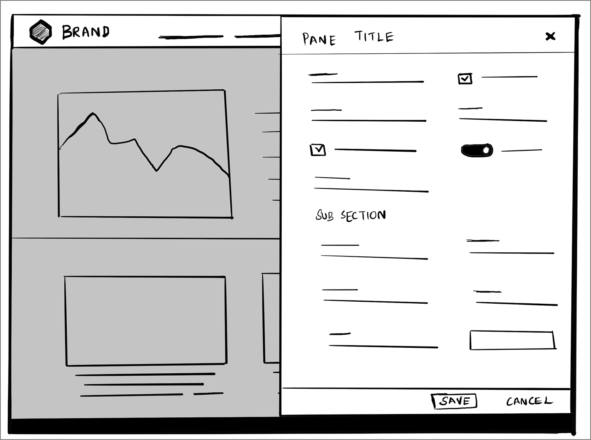
Grids to Card depiction
As per the inputs from the product owner, certain pages had data depicted in grids but didn't require it as there wouldn't be more data coming in. So we were asked to depict these in a better visual manner — using cards that contain those record details.
Key Design Solutions
Patterns that scaled across 200+ screens
Universal Documents / Comments Section
We checked the feasibility with the development team in tying up the documents and comments sections with all the Loan sections, then made it a universal tab segment for all 60+ sections in the dashboard.
The previous flow: open Loan section → review → close → back to dashboard → open Document section → review → close → make decision. The improvised flow: open Loan section & review all at one place to make decision.
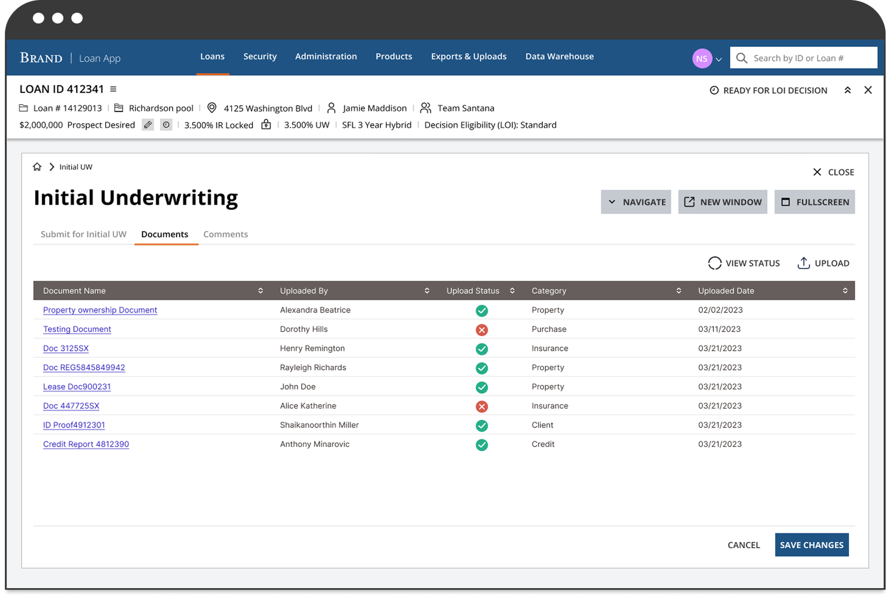
A different approach to validations
Scenarios in many screens had too many validations — up to 7+ in certain cases. This actually pushed the main content (forms / grids) below. We needed to show the validations as it's vital info, but we didn't need content jumping around.
So we took a different approach — a general banner that leads to a slide-out left pane showing all the validations on that page.
Flexing Artboards
While we were in the mid-journey of the project, RWD came into scope especially for Loan screens. We learned and adapted to create flexing artboards that can range from desktop to iPad devices.
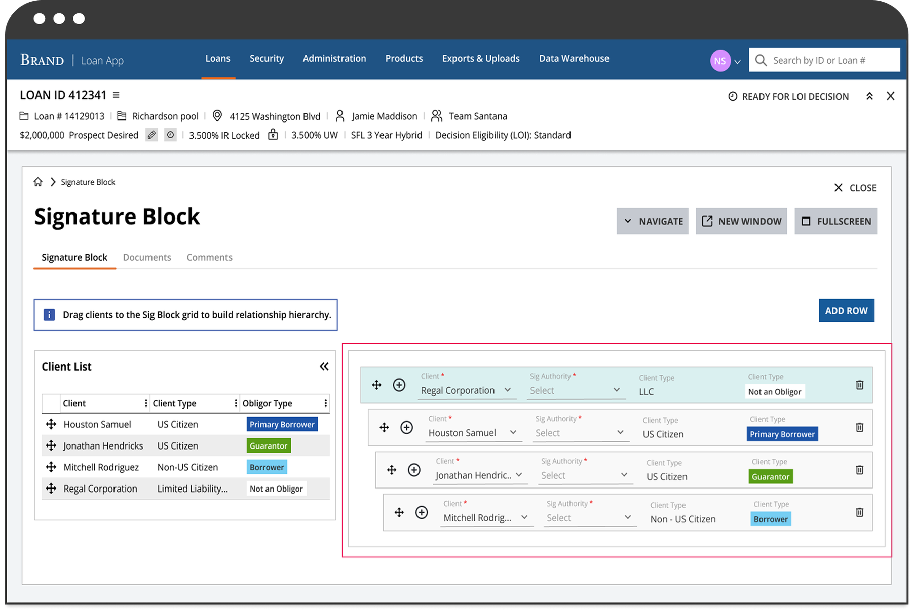
Improvising Accessibility
The Sig Block screen is one special example where the legacy application only had drag and drop methodology — totally inaccessible for keyboard users.
We made this page more accessible and structured. So we introduced many new functionalities in a row depiction manner to manually create a hierarchy of sig block.
The Renovated Loan Dashboard
Collaboratively with the product owner we brainstormed more on this dashboard's look and feel. We introduced many new elements to enhance the page's usability.
Smooth Navigation
Floating Loan card
Property & Client selection
Page finder
Clear information depiction
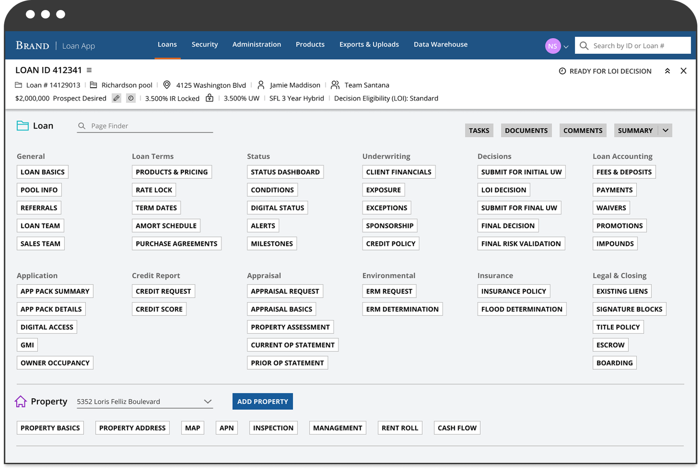
Challenges Faced
What made it harder than it looked
API constraints
Design proposals had to be limited within API & functionality changes. Checking feasibility of designs with the development team and iterating back and forth was tedious.
Custom design components
We had to create and modify some of the existing design components to propose design solutions with new elements that enhance the user experience.
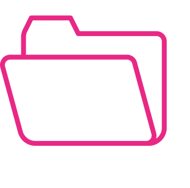
File handling at scale
File handling was tedious — there were more than 200+ screens. We needed to properly segregate and keep them in individual files end-to-end prototyped.
Testimonial from the Product Owner
The project greatly benefitted from your attention to detail, creativity, and willingness to provide feedback and creative perspectives when designing. In all, I believe the design team produced several hundred screens in a little over a year working together — an impressive scope of work.
An information system: a single-window platform to provide a wide range of properties for individuals who are active on duty, in military or deployed in active members and their families, per the Servicemembers Civil Relief Act (SCRA).
Role
Sr. UX Designer
Industry
Fintech · Banking
Platform
Web Application
Year
2023
Requirement
An MIS intended as a standalone platform
To study and understand the existing working legacy application and map the workflow in each module. Propose a new design with feasible design solutions, simplifying the user flow and information depiction. New design board should have scope for future enhancements in the application.
Design Process
From discovery to development
Discovery
Ideation
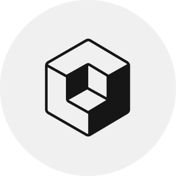
Conception
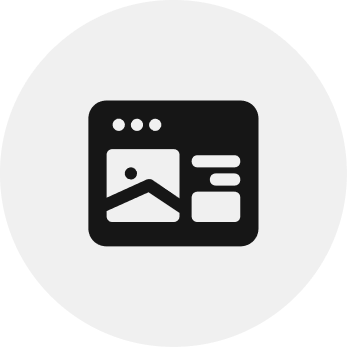
Design
Development
Approach We Took
A structured 5-step rollout
Study the existing application
Understand the context of use by playing around with the application and go through all the screens in every module to get a thorough idea.
Gather & specify user requirements
Collaborate with stakeholders and interview users to gather more insights about the requirements and document the same.
Create Redesign concepts
Based on the insights and the information gathered, sketch out design concepts. Low-fidelity wireframes are enough in this phase.
Validate the concepts
Validate the design concepts with the product owners, stakeholders and key users.
Convert concepts to visual designs
With the help of the design system convert the validated concepts to visual designs with a working prototype end to end.
FigJam Brainstorming · IA
Mapping the existing system
We began with analyzing the existing web flow, then created the IA mapping of the existing system after attempting redundant processes wishing in the current system. The Central Processing line performs the core actions of the application. Wherein the cases move through the existing review queues based upon their state, statuses and eventually it reaches completion stage.
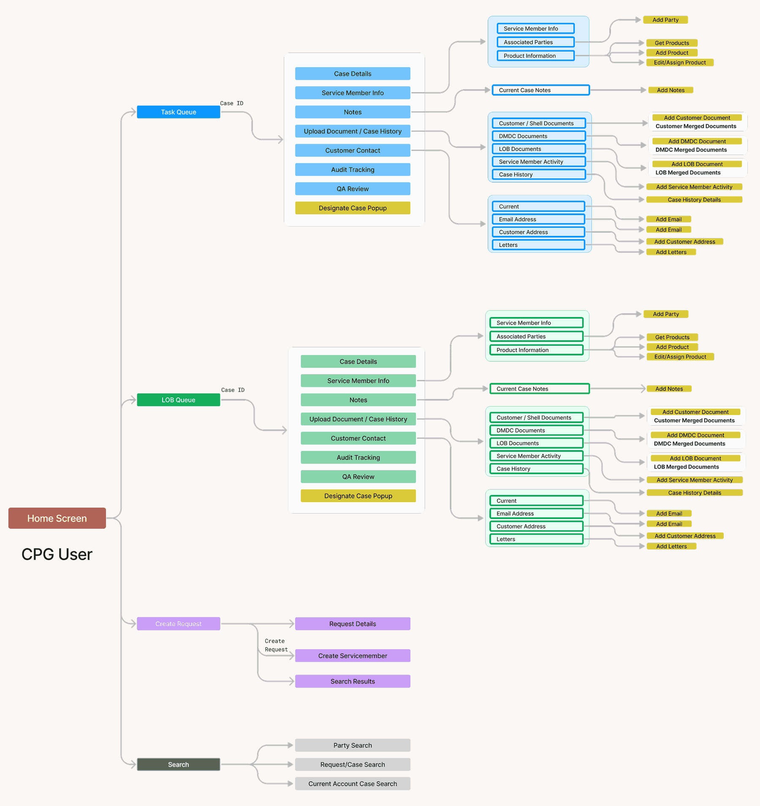
Heuristic Evaluation
Observations from the existing UI
Observations
Queues are the landing aspect of the application where the user gets to go through all information at a glance and decide to perform tasks. Some of the key observations in the old design are,
1
Case status cards are depicted in normal text forms, which makes it hard for users to identify cases.
2
List of general application settings that can be grouped together.
3
Broad section of modules aren't displayed in a header format.
4
Pagination is not available for the grid as the current implementation would cause lengthy vertical scrolling.
Observations
Case Details page forms the core part of the application as all the key tasks are performed within this page, which has multiple sub-sections and forms that can be viewed and edited as per entitlements.
1
The case details page has no navigation to go back to the former page. In fact there is no information to the user on where they are in the application now.
2
Too many accordions make the page so volatile and give the uneasiness of scrolling up and down.
3
Form elements haven't been segregated in a readable manner.
4
Entire layout needs renovation to improve the usability of this page.
Key Discussions
What we learned from POs, stakeholders and users
Key Information from Product Owners & Stakeholders
On the user groups
External (D2C) user groups with 30%, Internal CMs (Case Managers) and Quality Auditors with 50%, & Sub Vendors with 20% are the user volumes who access this application in their daily routines.
On case statuses
There are a lot of procedures and notifications that come along with the document submission flow. So design solutions need to allow some flexibility for those.
Major concerns
Cases get cluttered. Bringing more information up front about the case can help quick decision-making — having key information in one place.
Expectations
Simplify the existing legacy interfaces — adhere to the new design system & allow for future improvements. Bring information up front efficiently and reduce processing time.
Key Information from Users
Central processing users
The user works on the data on the way of cases. So they need to have all the info readily available. Cases move on different states & queues. Sometimes they shift across teams. Cases need a clear status indicator.
Quality Analysts
They have to ensure the cases are properly executed. To do that, they need easy access to recent case activity and a way to drill into specific transactions or pod-parcel related items.
Customer Journey
A map of the user experience
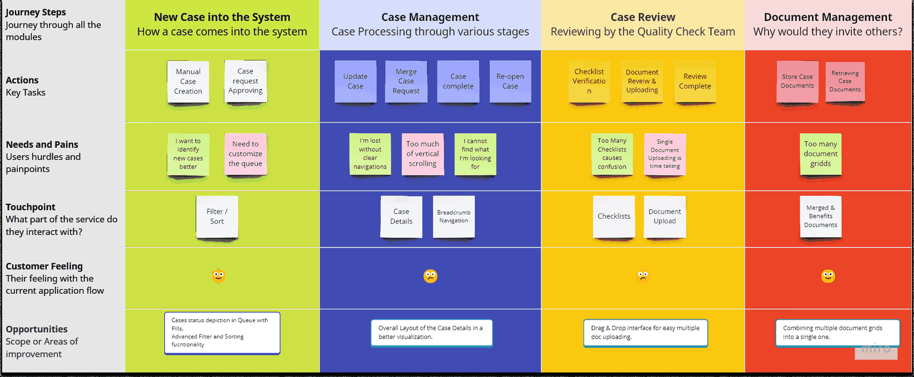
Key Design Solutions
Automating redundant steps
Automated new request to new case process by eliminating redundant steps
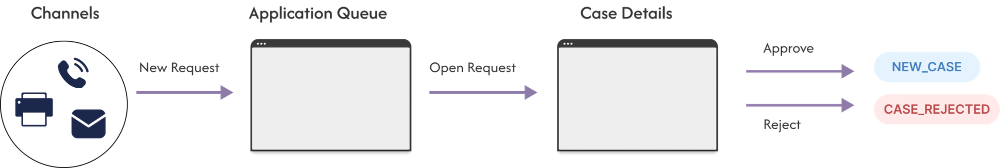
In the latest workflow New Case directly comes to the queue without manual intervention
Channels
New Request
We completely eliminated the request-related data in the grid storage as it was an unnecessary manual step for the user to approve. Instead it could be merged with case status — and rejected or proceeded further from that point onwards.
Introduced new features to overcome existing pain points
In today's system there is no way for a user to recall a case that has gone to another queue and also to reopen completed / closed cases.
As we learned this from the user interviews and business team connects, we approached with introducing a new functionality in both the cases — so that users need not follow a round-about process while case recalling and reopening.
UI Enhancements
Renovated Queue & Case Details
Queue Page
The application had 500+ statuses across screen flows. We retained the values but pre-sorted them logically — users could choose between custom views vs the legacy state-based view, giving them control without disrupting habits.
Case Details Page
Brought the most important case information to the top of the page. Information not directly needed for decision-making was moved to a side pane that opens contextually.
Design System & Accessibility
Codifying the visual language
We documented brand colors, page structure, color and sensory characteristics, components, actions, primary/secondary form elements, and error handling — to make sure the new application could grow consistently while staying WCAG-compliant.
Brand Colors
#D71E28
WF · Coral Red
#FFCC3D
WF · Yellow
#141414
WF · Warm900
#FFFFFF
WF · White000
#946E3A
WF · Gold
Page Structure
Header part is essential for the application with proper hierarchy.
Skip Links are required for users to jump past the navigation to the main header content.
Page Title is needed for every page to provide unique context.
Mast header Component
LogoSR
skip to main content
Skip link helps keyboard users skip repeated main contents and jump to the page's content quickly. We asked the dev team to include a skip link for keyboard users primarily.
The introduction of mast head with modules brought in the hierarchy in the visual representation which wasn't present earlier in the application.
Keeping all the app settings under one roof.
Color and Sensory Characteristics
Color Information — do not use color alone to convey information.
Need to ensure text and background have enough color contrast as per the standards.
Pill Components
Case CompleteCase EscalatedCase Rejected
For status depictions in the queue, we cannot just use icons with colors to indicate state as it wouldn't be accessible for blind users. So we needed text information as well. With the Pill component we were able to achieve this visual depiction for all types of users.
Buttons
Primary
Default
Disabled
Focused
Secondary
Default
Disabled
Focused
By organizing the Primary / Secondary action items, it was a key part to take care of placement of these buttons. As the button components already adhere to WCAG standards, the background colors of the surfaces where we place them have to be taken into careful consideration so they don't deviate from the standards.
Form Elements
Form Labels — input fields must have persistent visual labels.
Make sure text and background have enough color contrast as per the standards.
Input Field
1 Input Label
2 Optional Label
3 Rear-end Icon
4 Support Text
5 Input Text
The input field component is provided with all sorts of enhancements to keep the users informed and prevent error scenarios while form handling.
Error Handling
Ensuring form-field error messages are clearly indicated and associated with the proper field.
Provide clear indication of fields in error for information that is submitted whilst form handling.
Input Fields · Error-Highlight Scenarios
Text Field
! This is error text below text input fields
Dropdown
! This is error text below dropdowns
Inline Field
The application was heavily form-reliant, so it requires clear depiction of error messages — especially for the screen-reader users.
The development team had to make these messages announcing to a screen reader, so that the error scenarios are better handled and more accessible for users across the application.
A logistics startup based in Bangalore. The application controls smart lockers to help delivery persons deliver parcels into lockers, and customers pick up parcels — pods placed across the city in prominent places.
Role
Jr. Product Designer
Industry
Logistics · IoT
Platform
Mobile + Web
Year
2019 – 2021
Requirement
One app, three user groups
To design a mobile application facilitating parcel drops & pick-ups in electronic lockers for 3 user groups — Delivery persons, End consumers & Admin group. A Super Admin dashboard (web application) controls all the user groups' privileges.
Design Process
An iterative path through five phases
Discover
Define
Ideation
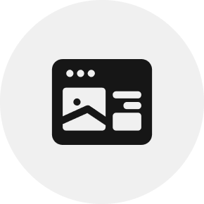
Design
Re-iterations between each phase
User Interviews
Listening to both sides of the transaction
After discussing the requirement with the product owner and stakeholders, we got a clear understanding of the mobile application we needed to design. We proceeded interacting with real-time users — 3 delivery persons and 5 residential customers — to capture their pain points and needs on delivering or receiving parcels.
Major questions to delivery persons
How long have you been in this line of work?
How is your experience especially when delivering parcels to apartments and institutions?
What if you can deliver parcels into a locker with an OTP?
What issues are you facing while delivering to a Pod?
What could be improved with today's OTP method?
Major questions to residential customers
How frequently do you purchase stuff online?
Are you facing any challenges with your e-commerce parcel delivery?
Can you highlight some of the major challenges you face today?
Would it be convenient if you had to pick your parcel from a locker system within your apartment?
Would using a mobile app for this be convenient?
Key insights from interviews
Saddam
Delivery Executive
"So many floors and phases within a residential apartment to identify and navigate all the way to deliver parcels to respective flats."
Vignesh
Delivery Executive
"When customer is not at the place I had to call them multiple times — sometimes wait for a long time before handing it over to someone else."
Andrea
Residential Customer
"I could not be there to receive my parcels due to meetings or other commitments. I had to request someone else to receive on my behalf."
Renuka
Residential Customer
"I find it so disturbing to receive so many calls from delivery persons asking for directions and other details."
Ananthan
Residential Customer
"I find it inconvenient and unsafe when my parcel is handed over to security persons — I buy valuable stuff online."
User Journey Mapping
From delivery executive to end customer
We need to comprehend the feel and touchpoints throughout the experience from these users' perspective. So we mapped the journey from a delivery executive till an end customer that happens with the help of pod storage facilities.
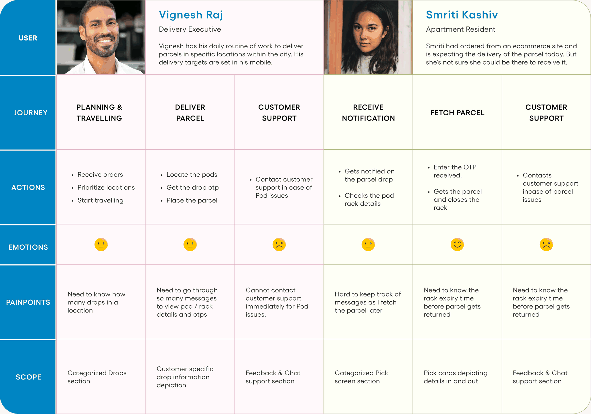
Feature Brainstorming
Mapping features per user group
We started brainstorming around the features needed on the major screens for each user group. Wanted to get a clear understanding of tasks they would be performing in their daily routine.
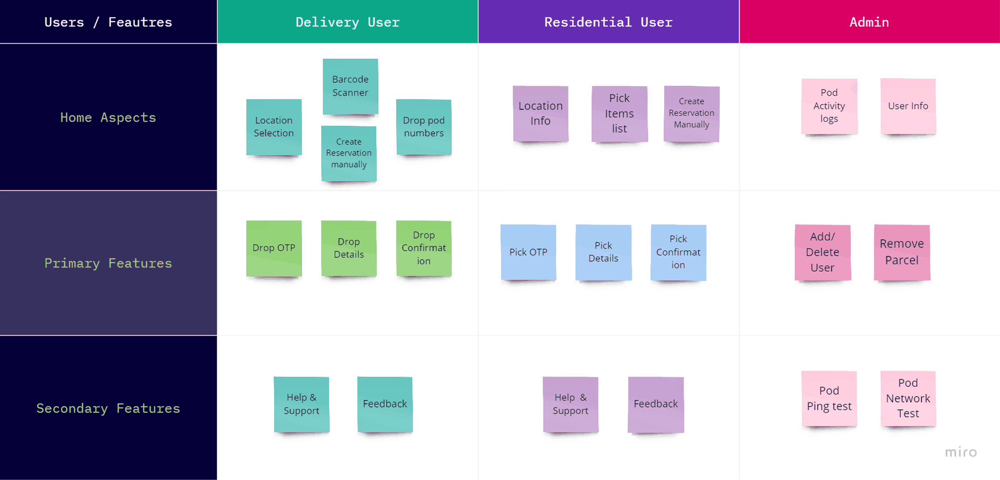
Information Architecture
An IA that works for all three groups
After getting a clear idea from the card sorting exercise, we moved into IA mapping — first mapping a general set of activities that works for all the user groups.
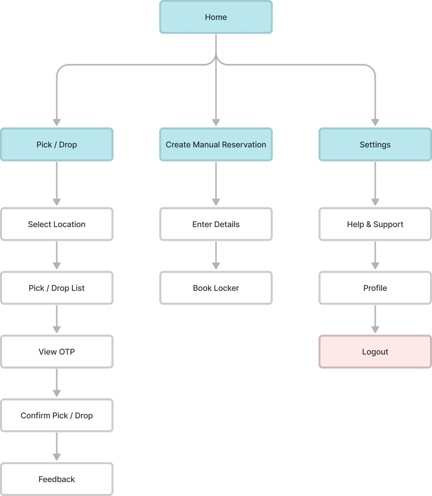
Concept Wireframes
Ideating concepts on the whiteboard
Based on the IA mapping activity, we ideated few concepts on the whiteboard to see how the features could fit into specific screens.
Onboarding
Onboarding didn't require many steps as we already get and store the mobile number in our system. So the user could just log in with their mobile number and OTP — plus a few details on first login (name and email).
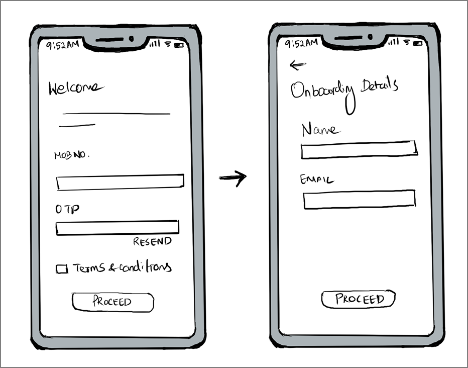
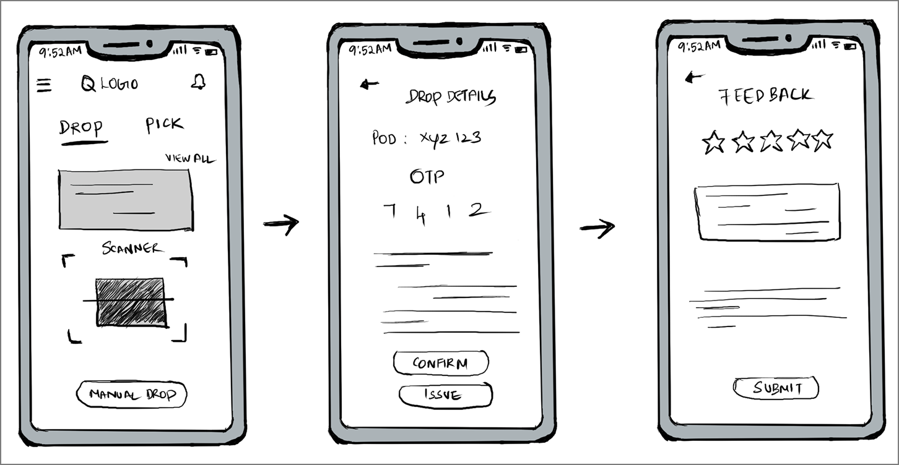
Drop / Pick Flow
As the Drop and Pick flow forms the major tasks in the application for delivery persons and end customers, we needed to make this very simple and easy to understand for users — without too many steps.
Visual Design Flows
From wireframe to final UI
Onboarding Process
Delivery partners' authorized mobile numbers are already stored in our system. So they only need to log in and validate their mobile number with an OTP, then proceed with a few details.
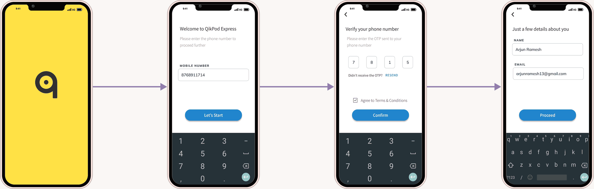
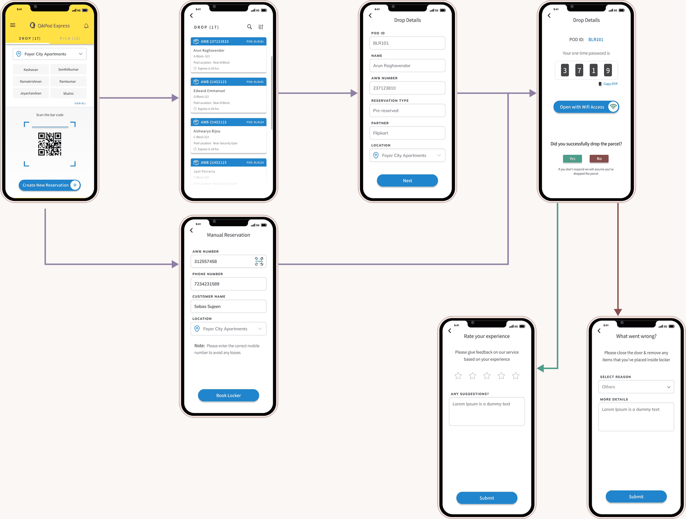
Drop flow · pre-reserved & manual reservation
The drop activity is carried out by delivery partners and even by customers at times for return parcels. A drop activity is done in two ways: pre-reserved way of dropping the parcel, and by creating a manual reservation.
Help & Support
On the initial roll-out we observed many pod issues and other technical issues. So we had to enhance the support section to report an issue on recent activity/transaction with the pod/parcel related issues.
Log history
Logs are tracked especially for delivery partners and admins at specific locations to identify issues and resolve them immediately.
A fitness trainer application that virtually assists the user to perform workouts based on their inputs. Starting with goals and progressing through various tasks to achieve them.
Role
UX Designer
Industry
Health · Fitness
Platform
Mobile Application
Year
2021
Requirement
A fitness companion for the home environment
To create a fitness application that facilitates users to do their preferred workouts in their preferred environment. Mobile application designs end-to-end prototyped.
Design Process
Discover · Define · Ideation · Design
Discover
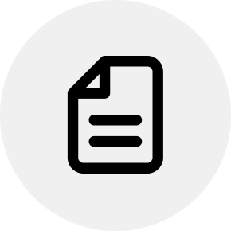
Define
Ideation
Design
Re-iterations through each phase
Survey & Results
Listening to users before designing
We conducted an online survey-based research and one-on-one interviews based on a guerrilla research method. Most of the users fall into the category of "in need of a fitness application with worthy content to look onto."
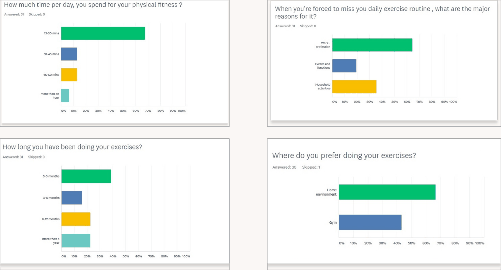
Key Takeaways
Most of them don't have the time to visit a gym due to work / profession.
Referring to online sources for assistance.
Workaholic people form the majority of target audience.
Branding plays a vital role in grabbing users' attention.
Convenience matters a lot for the target users.
Personas
Two distinct user archetypes
Based on the survey results and interview takeaways, two personas were created which cover the core audiences for the application.
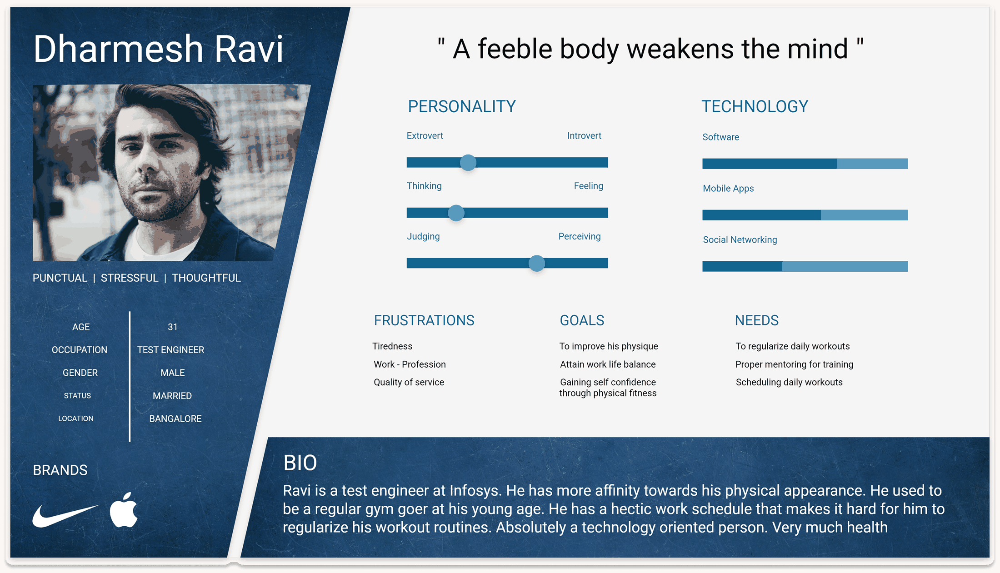
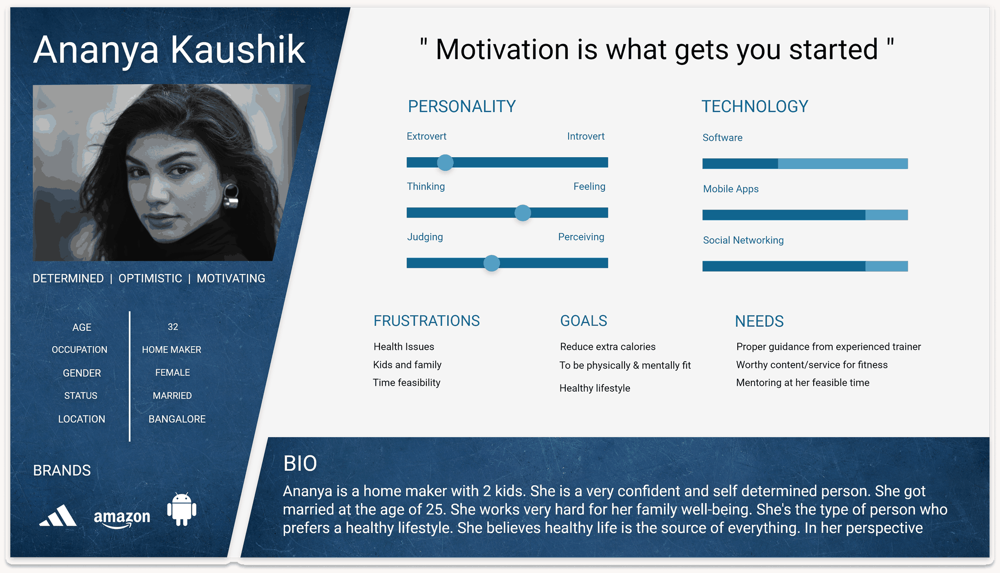
Story Boarding
Scenarios for each persona
By creating user scenarios based on their responses, storyboarding is done. We can correlate with the pain points of the user better by framing it in a story walkthrough.
Scenario 1 · Dharmesh
An IT professional who has to work long hours at his office except weekends. Worried about his physique and felt the need to do some exercise to keep his body physically fit despite his time constraint. He searched the internet for methodologies to work out at home — and came across Livfit. Out of curiosity he downloaded the app and started using it. Now he's happy with the progress and time saved.
Scenario 2 · Ananya
A homemaker with 2 kids and a tedious daily routine. She wanted to burn calories but had no time to visit a gym for guidance. Got recommended by a friend about an app that virtually mentors the user for workouts. With the initial onboarding inputs the app suggested plans for her — after 2 months she was delighted to lose 3 kg.
Card Sorting
What features actually help?
After knowing the user requirements, card sorting exercise is done to get an idea about what types of features and flows would help the user attain their goals through the application we design.
Information Architecture
Structuring the app for different needs
Fine-tuning from the card sorting activity, we created the Information Architecture required for the design of this application. It depicts the features or services under each phase of the application to get a clear understanding about needed features.
Low Fidelity Wireframes
First passes on priority screens
Some concept wireframes were created for onboarding screens, workout plans, workout progresses, profile & goals. These were some priority sections in the application.
Visual Designs
The final UI, screen by screen
Home Screen
The home is categorized into three sections — a banner for the highest offer, a sub section of offers available for basic plans, and a recommendation section based on the user info collected during onboarding that suggests workout plans and diet plans.
Workout Screens
The workout plans are categorized based on body sections the users want to focus on. Under each section, a specific set of workouts are listed for the user to choose their preferred option. Each workout has a number of sets, reps and approximate time taken to complete them. Equipment information is also listed below each workout.
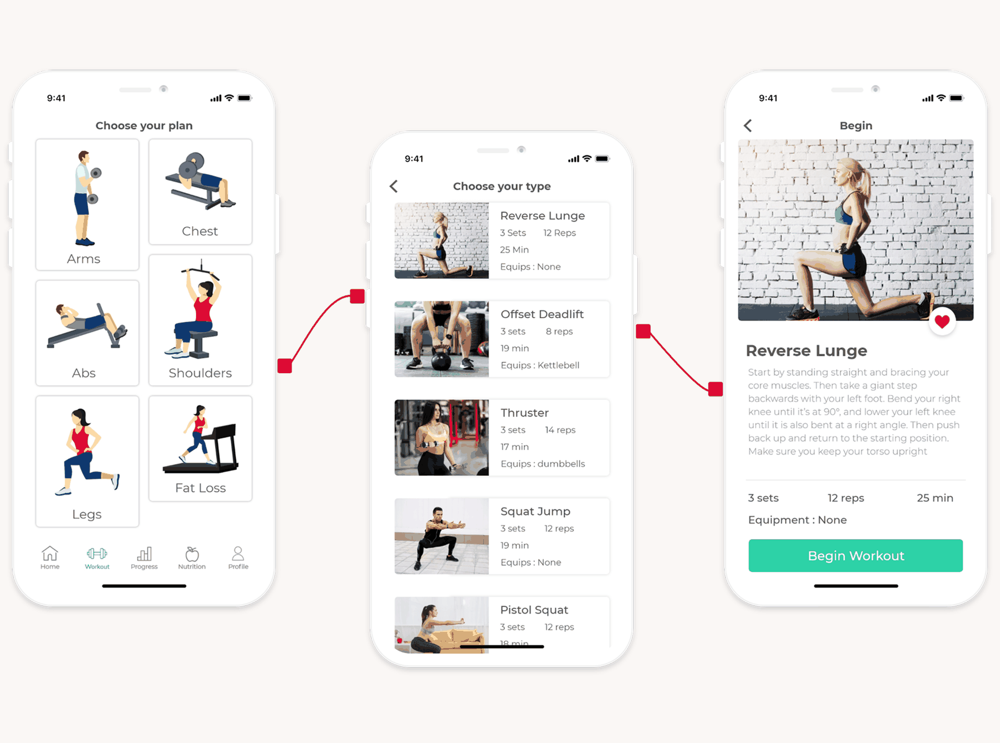
Workout Progress
The workout progress of the user is depicted in two types of graphical views — a weekly analysis for the number of workouts successfully completed by the user, and a comparative analysis of workouts to calories burnt in terms of days, weeks and months.
Profile Screens
Profile is divided into three phases for the user's convenience: Active plans section for ongoing plans, Goals section for the user to know the completion rate to reach their day-to-day goals as well as long-term goal, and My Info section covering the user's physique details that are constantly updated as they progress.
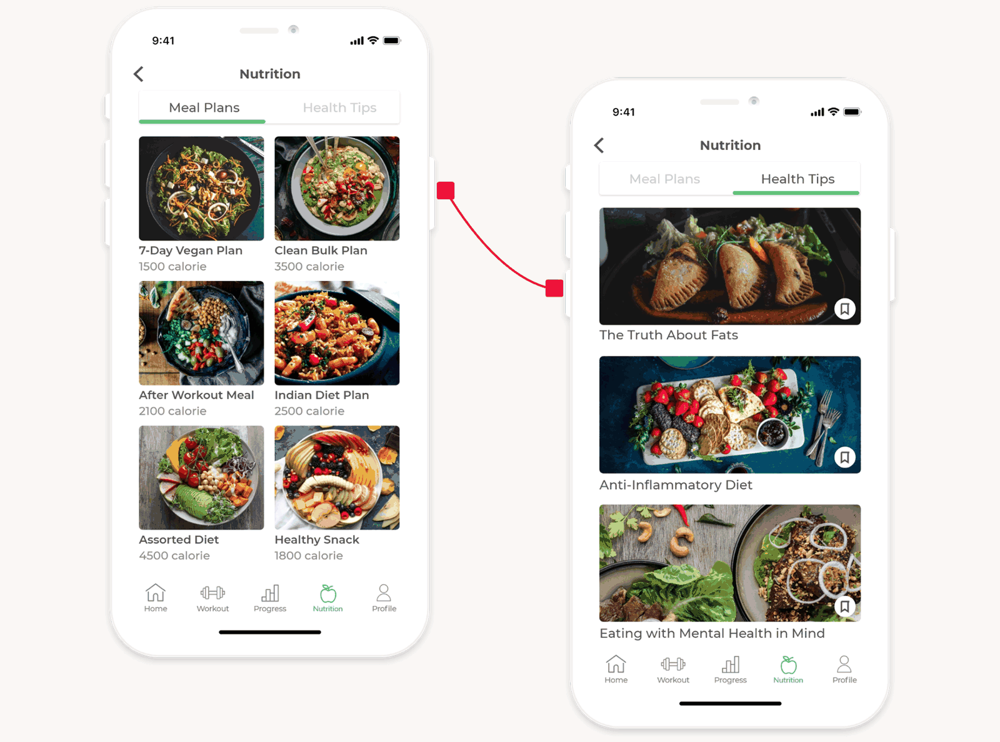
Nutrition Guide
This is an add-on section but plays a key role per the users' interest. The Nutrition tab is divided into two segments: Meal plan segment lists all meal plans for the user to choose their preferred plan, and Health Tips segment depicts the latest articles regarding health, diet and nutrition.
A subscription UX framework designed in deliberate partnership with Claude AI — used as an ideation accelerator, edge-case probe, and pattern-variant generator. The output isn't a stack of mockups; it's a reusable, configurable system any product team can extend.
Role
Sr. UX Designer · Systems
Industry
Fintech · SaaS
Platform
Web Application
Year
2026
01 · Project Overview
A subscription UX framework built with Claude AI
A major American financial-software company was shipping six different subscription experiences across its product suite — each surface owned by a different team, each with its own upgrade, downgrade and recovery patterns. My remit was to design a single workflow framework that consolidated those patterns and made them rapidly composable. Claude AI became a deliberate part of the workflow — used as an ideation accelerator and edge-case probe, not as a screen generator.
My role
Defined the strategy, the framework architecture, the methodology by which AI was integrated, and led the human-side curation and validation. Owned design system alignment with IDS, accessibility audits, and stakeholder buy-in across six product teams.
Scope of work
End-to-end: comparative research → pattern taxonomy → an internal "builder" tool that designers and PMs use to assemble lifecycle flows from configurable primitives → handoff guidelines, edge-case playbook, and a published component library extending IDS.
02 · Problem Space
Six products, six patterns, one frustrated customer
When a customer upgraded in one product and then downgraded in another the next month, they encountered two completely different mental models — different button hierarchies, different cancellation copy, different recovery semantics. Each team had reinvented the wheel.
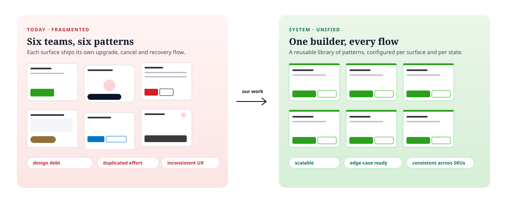
Inconsistent experiences
Different button placements, status labels, and cancel-flow language across products eroded trust at the most billing-sensitive moments.
Duplicated UX effort
Six teams designed near-identical upgrade flows in parallel — months of work, no shared library to pull from.
Compounding design debt
Each surface accumulated micro-variations over time. By 2025, no two SKUs shared the same downgrade-review pattern.
Edge cases left to luck
Expired cards, paused subscriptions, prorated mid-cycle changes — every team handled them differently, often inconsistently.
03 · Design Goals
From screens to systems
Before any pixel, we agreed on five outcomes the framework had to deliver. These goals became the criteria by which every later pattern, primitive and AI suggestion was judged.
G1
One source of truth
A single canonical place where every B&S pattern — upgrade, downgrade, recovery, comparison — is defined, versioned, and consumed by product teams.
G2
Compositional, not template-rigid
Patterns must be assembled from smaller primitives (pricing card, status banner, comparison block) so teams can extend, not branch.
G3
State-first, screen-second
Design the lifecycle states (active, trial, past-due, paused, cancel-pending) before the screens — the screens emerge from the states.
G4
AI as accelerator, not author
Use Claude to surface variants, probe edge cases, and pressure-test copy — but every accepted pattern passes through human judgement on clarity, ethics, and accessibility.
G5
Honest by default
No dark patterns. Cancellation flows must be as discoverable as upgrade flows. Retention messaging must be informative, not coercive.
04 · Discovery & Research
Tearing down three SaaS giants
I ran a structured comparative UX teardown of three subscription products that have evolved their billing UX over many years — Notion, Slack and Netflix. The lens was deliberately narrow: transition flows. How does each product handle the moments where the customer is changing plans, leaving, or recovering from a failed payment?
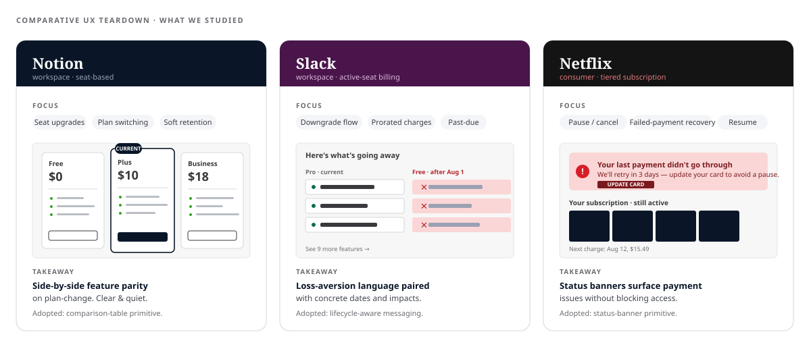
What the teardown surfaced
Side-by-side beats single-column
Notion's three-up comparison with a clear "current" indicator outperformed every modal-driven plan-change pattern we tested in usability interviews.
Loss aversion needs concrete dates
Slack's downgrade-review pattern paired feature loss with the exact effective date — abstract "you'll lose access" copy tested significantly worse than "After Aug 1, you'll lose…".
Recovery must not block access
Netflix surfaces failed payments via a top-of-screen banner without locking the account — punitive lockouts destroy trust and increase churn rather than recover revenue.
Pause beats cancel — when honest
Across all three, an explicit "pause" option recovered customers who would otherwise cancel. But only when pause was easy to find, not buried as a manipulative gate.
05 · AI-assisted Workflow Strategy
Claude as a systems-exploration tool
The deliberate framing: AI is best at breadth, humans are best at judgement. I built a four-stage loop where I framed each scenario, Claude generated 10–15 variants and edge-case branches, I curated against IDS / accessibility / ethics, and the curated decision became a configurable primitive in the builder. Every loop closed by feeding back into the next scenario.
Where AI actually moved the needle
PATTERN EXPLORATION
Lifecycle flows surfaced as branches, not single screens
Prompted Claude with a scenario like "customer downgrades from Plus to Simple Start mid-cycle while past-due" and got back a decision tree of 14 branches across upgrade, downgrade, cancellation, failed-payment recovery, and plan-comparison transitions. Branches I'd never have manually enumerated — like "downgrade-while-past-due-with-pending-credit" — surfaced naturally.
EDGE-CASE SIMULATION
Probes for the cases nobody wants to design for
Structured prompts to simulate: expired cards mid-renewal, paused subscriptions with prorated credit balances, enterprise billing exceptions requiring AE escalation, prorated upgrades crossing fiscal-year boundaries. Each probe returned ranked variants with the underlying logic spelled out — easy to accept, reject or escalate.
COPY VARIANT GENERATION
Ten ways to say the same thing — then pick one
For every system message — "your card expired", "your plan changes next cycle", "we'll prorate today" — generated 10 variant phrasings spanning tones (neutral, warm, urgent) and explicitness levels. I picked the variant that scored best on clarity + neutrality, never the most "engaging" one.
PATTERN PRESSURE-TEST
"Where does this pattern break?"
Final step before committing a pattern to the builder: ask Claude to enumerate failure modes — accessibility blind spots, ambiguous states, locales where the copy doesn't translate cleanly, dark-pattern risks. Roughly one in four pattern drafts came back with a real flaw I'd missed.
What AI was explicitly not used for
Final layout decisions, visual hierarchy, or component composition — those were human judgement against IDS specifications.
Ethical retention decisions — every dark-pattern temptation Claude proposed was rejected and logged as a learning.
Final copy that appeared in the product — variants were a starting point; I rewrote the chosen variant for tone and accuracy.
Anything customer-identifying — all prompts used synthetic personas and anonymised scenarios.
06 · UX Methodologies Applied
Five lenses, used deliberately together
Each methodology answered a different question. Systems thinking gave shape to the framework. Atomic design gave it parts. Scenario-based design told us what cases to design for. Human-centered AI collaboration governed how Claude was used. Progressive disclosure governed how information reached the customer.
M1
Systems thinking
Rather than designing isolated screens, I approached billing as an interconnected lifecycle ecosystem. Defined reusable flow logic, state-based UI behaviour, and scalable decision patterns. The "upgrade" pattern isn't a screen — it's a state machine that emits screens depending on the current lifecycle position.
M2
Atomic design
Created modular building blocks — pricing cards, invoice modules, status banners, plan-comparison blocks, retention cards, payment-recovery patterns. Each block has documented states, variants, and accessibility requirements that conform to IDS tokens.
M3
Scenario-based design
Mapped flows across the multiple user states that the framework had to support — active subscriber, trial user, downgrade-intent customer, paused subscription, expired subscription, enterprise customer hitting a custom-quote ceiling. Each scenario became a test case the builder had to satisfy.
M4
Human-centered AI collaboration
Used AI as an ideation accelerator while maintaining human judgement on usability decisions, prioritisation, ethical retention patterns, and clarity of communication. A documented curation protocol: every AI suggestion is tagged accepted / rejected with a reason logged in the framework's evidence trail.
M5
Progressive disclosure
Reduced cognitive load by progressively revealing billing breakdowns, advanced plan settings, retention offers, and plan-change implications. The default surface shows what the customer needs to know; deeper detail expands on demand. Trowsers, accordions and side drawers carry the load.
07 · The Builder Framework
Designing a builder, not a deck of screens
The output isn't a Figma file with mockups. It's a tool. Designers and PMs across six product teams open the builder, pick a scenario, select the lifecycle state, and the builder assembles a configurable flow from modular templates and primitives. Here's how that actually plays out when a designer needs to ship an upgrade flow.
A walkthrough · building an upgrade flow
Four deliberate steps. Roughly twenty minutes of work for what used to be a week of variant sketching across siloed teams.
01
Pick a scenario, set the lifecycle state
From the pattern library on the left I select Upgrade · single SKU. The builder loads a default 4-step flow scaffold. I then pick the entry lifecycle state — Active in this case — which determines the default branching tree. (Picking Past-due instead would have loaded a flow that opens with a payment-recovery banner rather than a comparison block.)
02
Compose the flow from primitives
I drag four primitives into the canvas: Subscription card into Step 1, Comparison block into Step 2, Review trowser into Step 3, Confirmation modal into Step 4. Every primitive is already IDS-tokenised — no re-styling needed. Spacing, colour, type and accessibility states are pre-wired.
03
Probe edge cases and copy variants with AI
I press ↻ AI explore. The builder sends the current scenario and state to Claude, which returns twelve variants spanning edge-case branches and copy alternatives. Each chip labels the underlying scenario it addresses — expired card, enterprise custom terms, paused mid-cycle — and I curate accept / reject directly in the panel. The rejected one in this run: an auto-renew nudge that failed the consent check.
04
Commit as a versioned pattern
One click on Commit publishes the curated flow as v1.0 of Upgrade · single SKU · Active. The build emits three artefacts: a Figma library entry the design team consumes, a JSON spec the front-end team implements directly, and an evidence trail showing every accepted/rejected AI variant with reasons logged.
What the customer sees · the upgrade flow in production
The output of those four builder steps. Three screens, all assembled from primitives in the shared library — meaning the next product team that needs an upgrade flow doesn't start from scratch; they inherit this.
Same builder · different intent · different output
The real value of the framework shows up the moment the designer's intent flips. The same builder, the same primitive vocabulary, but a different lifecycle pattern selected — and the customer experience diverges in deliberate, ethical ways. The upgrade flow leads with forward-positive CTAs and a 3-up comparison; the downgrade flow leads with honest loss-disclosure and a neutral confirmation.
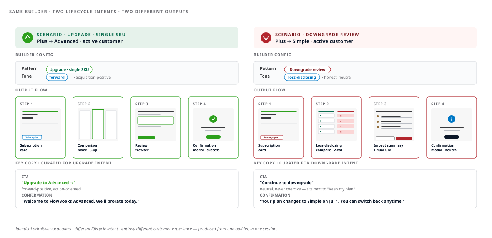
What the framework gives every product team
Modular flow templates
Each lifecycle scenario (upgrade, downgrade, cancellation, failed-payment recovery, trial conversion, plan comparison) ships as a template with curated default steps that any team can fork.
Configurable states
The same flow renders differently depending on the customer's current lifecycle state. Active customers see review trowsers; past-due customers see status banners first; paused customers see resume CTAs.
Reusable interaction patterns
Pricing cards, comparison blocks, retention cards, confirmation modals — all sourced from a single primitives library. Update the primitive once, every consuming flow updates.
Adaptive messaging structures
Curated copy variants live alongside each pattern. Teams pick the variant that matches their tone (forward-positive for upgrades, loss-disclosing for downgrades, urgent for past-due) without writing copy from scratch — every variant has been pressure-tested for clarity and ethics.
08 · Design Process
A loop, not a waterfall
The process is iterative by design. Each new scenario runs through the same six stages — and patterns from earlier scenarios feed back into the library as primitives for later ones.
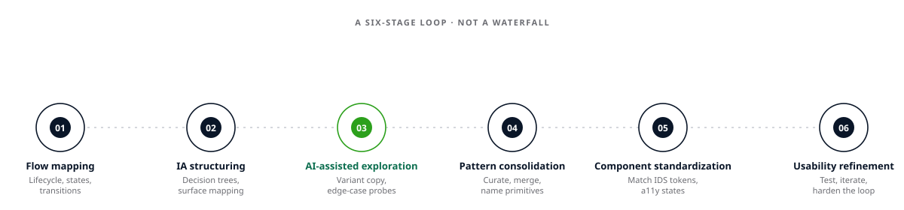
Flow mapping
Start with the lifecycle: states, transitions, decision points. No screens yet — just the state machine on a whiteboard.
IA structuring
Map decision trees to surfaces. Which screens host which transitions? Which states share a layout vs. need their own?
AI-assisted exploration
Frame a scenario, prompt Claude for variant flows, edge-case branches, copy alternatives. Generate breadth before depth.
Pattern consolidation
Curate the variants. Reject the ones that fail clarity, ethics or IDS checks. Name the survivors as named primitives in the library.
Component standardization
Translate each curated pattern into IDS-token-compliant components. Document states, accessibility specs, and content slots.
Usability refinement
Test the assembled flow with real customers. Feedback loops back to stage 1 — new scenarios surface, new edge cases register.
09 · Outcome
What the framework actually changed
The project demonstrated, concretely, how AI-assisted workflows can accelerate UX exploration, reduce repetitive design tasks, improve the scalability of complex systems, uncover overlooked edge cases, and support genuinely rapid iteration cycles.
~70%
faster pattern exploration
What used to take a week of variant sketching now takes a day — AI surfaces the breadth, the designer curates.
6 → 1
unified subscription experience
Six product teams now consume the same library. Net-new B&S features ship with the same interaction language by default.
3×
edge cases caught early
AI probes routinely surface scenarios that don't appear until QA or production. They now get designed for, not patched.
0
dark patterns shipped
The curation protocol caught and rejected every coercive retention nudge Claude proposed. Every shipped flow passed the clarity-and-consent check.
10 · Key Learnings
Three lessons I'll carry into every future system
L1
AI works best as a systems-thinking collaborator
It is at its most useful when the human partner already has a clear mental model of the system — AI then explores branches the human knows how to evaluate. Treat it as a thinking-partner with strong opinions and weak judgement, never as a co-author.
L2
Subscription UX is fundamentally behavioural UX
The screens are the easy part. The hard part is reading customer state correctly, surfacing the right information at the right moment, and respecting the customer's decision-making process — especially around money. AI helps, but the behavioural model has to be human.
L3
Scalable UX means designing logic, not just interfaces
The biggest unlock wasn't any individual screen — it was treating B&S as a state machine and shipping the machine, not the screens. Every team now extends a system, not maintains a copy of one.
A space outside of work
My Passion
Apart from designing I like to draw and create vector graphics. What started with paper and pencil eventually grew into digital art. I made my first digital art in Adobe XD with the pen tool, exploring how much detail I could create. Later I moved to Procreate to learn brushes and shading based on real-life photographs. Below are some of my best works.
Procreate Illustrations
I wanted to learn and explore the brush strokes and settings within Procreate, so I started creating artworks based on real photographs. The main idea was to understand how to customize these brush properties and apply them effectively. I also fiddled around more with hair texture brushing — that gave me more idea on how the brush and smudge could work in depicting hair representation. The layering of sections played a vital role in fine-tuning artworks once coloring and outlining were complete.
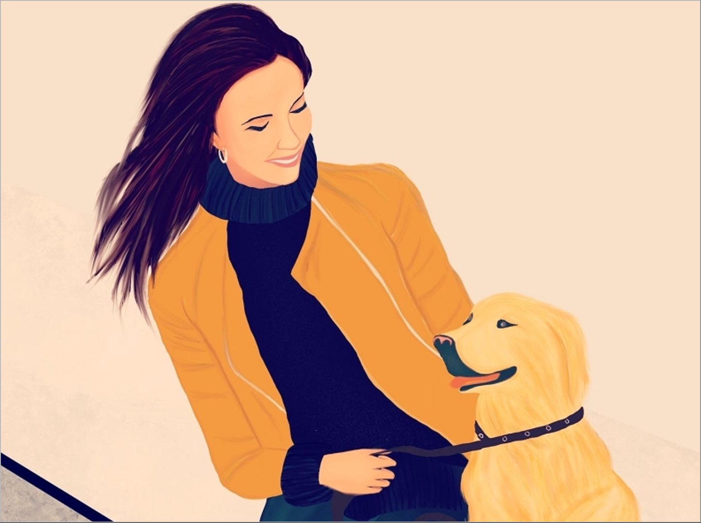
Girl & Golden Retriever
Lakeside · Mountain View
Lady with Hat
LaBeast — Lamborghini
Adobe XD Pen Tool
I initially started creating icon vectors as I got tired of fetching free icons online. Slowly I got the hang of the pen tool in XD and wanted to push how much detail I could create with it. Most of these are based on game characters and anime references. I was also taking up concepts based on Dribbble's weekly challenges, creating some vector-based illustrations.
Hi, I'm Saravana — a Product Designer with over 6 years of experience specializing in AI-driven user research and design. I use machine learning insights to enable predictive analysis, craft personalization strategies, and design intuitive conversational experiences. I work on digital products for high-profile clients, leveraging AI's analytical and predictive capabilities to deliver innovative, user-centered solutions. I do vibe coding with Claude AI and Figma Make to accelerate application design workflows and enhance prompt-driven design processes.
Leading the design of an AI-assisted workflow system that generates scalable billing & subscription UX patterns across six product surfaces.
Architected a reusable framework of modular flow templates, configurable states, and primitive components extending the Intuit Design System.
Using Claude AI as an ideation accelerator and edge-case probe — exploring upgrade, downgrade, cancellation, failed-payment recovery and plan-comparison patterns.
Defined a human-curation protocol for AI-suggested variants to ensure clarity, accessibility, and ethical retention design.
Delivered Figma component libraries and JSON specs consumed directly by product engineering teams.
Ford Motor Company — Vehicle Software Updater
Designed UX concepts for a vehicle software update management application.
Collaborated with stakeholders to refine product requirements into design solutions.
Developed high-fidelity interactive prototypes demonstrating real-world update workflows.
Visualized software update data flows for better stakeholder understanding.
Wells Fargo — Member Information System Redesign (BFS)
Conducted heuristic evaluation of the existing SMIS platform.
Partnered with business teams to identify key workflow improvements.
Designed and iterated high-fidelity wireframes in Figma.
Collaborated with stakeholders to refine concepts and obtain client approvals.
JPMC — Loan Application Redesign (BFS)
Performed UX research and visual design for a complex loan management system.
Collaborated with client teams and business analysts to design improved workflows.
Created high-fidelity designs and advanced Figma prototypes for complex modules.
Led regular design discussions to iterate and refine product experiences.
Other Internal Activities
Prepared UX effort estimations for project proposals.
Created user journeys and personas to support business proposals.
Contributed to UX training programs including advanced Figma workshops.